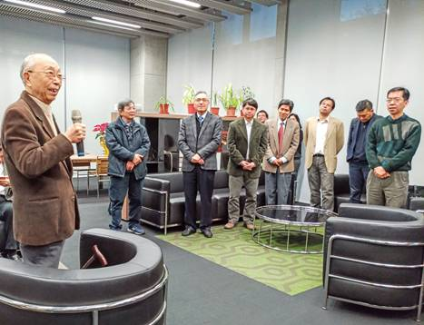

收录于合集 #学人小传 10个
导语
学人简介 ：胡佛，1932年生，浙江杭州人，台湾大学政治学系名誉教授，台北“中央研究院”院士，中国社会科学院名誉高级研究员，曾任台湾大学首届连震东法政讲座教授，其研究领域横跨政治学与宪法学，在 政治行为与政治文化 、 民主化与制度变迁 、 宪法学 以及 司法判例学 等研究领域着力甚深，著有专著10余部，发表学术论文120余篇，被誉为 “ 政治学泰斗”。
众所周知，中国内地的政治学发展历经坎坷。在上世纪50年代院系调整时，政治学被作为资产阶级伪科学而遭到取缔，直到1979年，在邓小平 “政治学、法学、社会学以及世界政治的研究，我们过去多年忽视了，现在也需要赶快补课” 的指示下，政治学学科才得以恢复。近40年来，在诸多前辈的不懈努力下， 以大陆为主体的中国政治学形成了以马克思主义政治理论研究为核心的鲜明风格与气派 。而在宝岛台湾，政治学研究则呈现出另一种路径。 倡 导科学化、实证化研究特别是遵照行为主义的方法来研究政治行为与政治文化是其主要特征 ，胡佛教授便是其中的杰出典范。
胡佛教授生于杭州，为家中第三子，其父戴天球时为贤达人俊、著名律师，早年追随孙中山民主革命，曾与爱国民主人士沈钧儒、章士钊等人创立中华民国律师公会，后来当选为国民大会代表。胡先生少时长于扬州，曾就读于扬州中学，1948年国共内战期间，青年胡佛与父母赴台定居。受其父耳濡目染之影响，胡先生考入台湾大学法律系就读， 主要研习宪法与宪政，这即是法律学研究中的重中之重，同样也是政治学研究中旧制度主义范式的诸传统，这些知识自然也为他日后在政法两科研究上驾轻就熟打下坚实的基础。
在本科毕业时，与多数选择进入公务员系统和律所谋职的同学不同，胡先生选择继续深造，先是考取台湾政治大学的政治学研究所，后远赴美国埃默里大学（Emory University）攻读政治科学专业。在美期间，其一开始也是研习与宪法学高度相关的判例法学、比较政府学。但是后来在芝加哥大学、哥伦比亚大学以及耶鲁大学访学的过程中，胡先生的研究兴趣发生了重要转折，这其中的原委不得不从当时的社会科学研究的大背景谈起。
众所周知， **20 世纪60年代正是美国行为主义政治学盛行的年代，对微观个体的政治行为和政治态度的研究风生水起，师法自然科学研究的统计与实验的研究方法方兴未艾。**留美研读政治科学的胡先生自然受社会科学变动大趋势的影响。然而仅仅是跟风就能让研究旨趣转向的说法显然以偏概全，对此，胡先生有自己的解释。在他看来，之前的宪法学和政治学研究都是“从权力结构观察政治体制”， “谈来谈去都是谈制度，比较是一种形式的规范。其实政治跟人有很大的关系，因为制度是人订的” ， “权力结构不能离开人的活动而独存”，“对人的政治行为的观察，应是科学探究的另一面，并且是根本的一面” 。因此，在巩固原有研究专长的同时，胡先生转向了对政治行为与政治文化的研究，这也成为其一生的研究旨趣。
诚然西方是政治行为与政治文化研究的发源地，但是这些理论是对西方自身发展历程所抽象出的一条经验，在运用到发展中世界特别是中国时难免生搬硬套。 相比于近年来中国大陆学者不断呼吁的“政治学与国际关系理论的中国化”、“用中国概念发声”而言，胡先生与他在台大的同仁杨国枢、黄光国、叶启政三位教授最早提出了 “社会科学中国化与本土化” 的概念并付诸实践。 **（链接：《石之瑜：社会科学本土化研究的历程》）**由此，一系列从本土政治实践经验提炼出的政治学理论与方法得以问世。
就政治行为学研究而言，胡先生开创性地提出了诸多理论，他对国民党统治下的“国家—社会”关系、对台湾选民的政治参与行为等领域有着精辟独到的分析。拿国民党的统治结构来说，胡先生提出代表性的 “伞状威权” 说。在胡先生看来，古往今来，政治的核心就是权力，再精美化的政治科学研究也无法绕开权力。国民党统治台湾就是对政治权力精细化的运营过程，其中当局领导人就是能控制整把伞开关松合的“按钮”，而社会中的三个维度——统治社会（军队）、政治社会（金融保险寡头、地方派系）及民间社会（商会、农会和工会等社团组织）则组成了“伞面”。作为“伞柄”的国民党通过对各个层级和行业部门精英人物的吸纳，构成权力网络中的恩庇—侍从关系，由此强硬地统治了40年之久。
就政治文化而言，像托克维尔、阿尔蒙德、维巴以及帕特南等人都有过深入的研究，从他们的论述中可以抽象出一条共同的逻辑，那就是民主制度的建立与存续有赖于良好的公民文化传统。在他们眼中，什么样的文化产生什么样的制度。 但是文化与制度之间相互影响，其中存在的内生性无法回避。因此，我们也可以说什么样的文化产生自什么样的社会，政治文化的形成也是被形塑的过程。 同时， 对发展中地区而言，西方学界重视公共利益冲突的协调解决，关于政治文化的论断不仅有更严苛的先决条件，而且似乎遮蔽了政治的核心与本质。 胡先生认为， “政治生活是权力关系的一种互动经营，政治文化是政治生活的基础，也是权力关系在主观上的一种正当信念。”
立足台湾地区独特的政治环境与民主转型的现实情境，胡先生从演绎推论入手，提出 “统摄性的政治文化” 、 “结构性的政治文化” 以及 “功能性的政治文化” 三维分析架构，其中 “统摄为根本、结构与功能则顺居其次” 。在胡先生看来， 在政治体系中，统摄的取向就是以国家认同和爱国情操为代表的政治态度，是推动现代国家建设的前提。在此基础上，现代化建设诱致权力关系的改变，从而产生结构性的政治文化变迁。 显然， 这一文化架构的提出不仅吸取了西方民主化研究中的精髓，而且强调了西方政治理论忽略的在转型社会与现代国家建设下必须重视的“国家认同”和“民主化的同质性”问题。 我们可能知道林茨和斯泰潘在其名著《民主转型与巩固问题》用了大量文字来讨论这一问题，但是可能并不知道以胡先生为代表的中国学者早有先见之明。石之瑜教授曾提到，胡佛老师提出的“统摄性政治文化”不仅为分析以中国台湾为代表的族群多元的转型社会提供了新的方法，而且也为思考中国大陆主体民族与少数民族之间的关系提供了重要启示，实则弥足珍贵、有重大贡献。然而随着胡先生的退休，台湾学界为了与国际接轨，对民主化的研究统统采用与西方大体一致的问题设定来继续推行，对“统摄性政治文化”的追踪戛然而止，不能不说是一种遗憾。
众所周知，要想深入研究政治行为和政治文化，必然离不开社会调查。威权时代的国民党当局尽管在形式上装模作样，搞“民主选举”，宣称“合法性”，实际上垄断选举、打压党外竞争者。尽管如此，选民却用投票来表达对当局的不满，在上世纪70年代以来以“中坜事件”为代表的社会抗争运动此起彼伏。
对此，胡先生认为 既有的理论无法解释实存的世界，因此力倡实践，以身作则，率先带领学生到街坊中，到田间地头，发问卷，搞访谈，做社会调查，跑遍全省，数十年如一日 。他指导的学生，后来亦当选“中央研究院”院士的著名学者朱云汉教授的硕士论文就是《台湾地区的政治参与》。尽管在那一时期，由于威权政府对社会的严厉管制，在这种严苛的环境下做社会调查了解民意就相当艰辛不易。对此，胡先生在一次学术报告中曾笑称“我们前面在做调查，当局就在后面调查我们”，而依据调查数据得出的结论既不为同行所待见，更被当局视为“眼中钉肉中刺”。但是所有的努力都有回报，在台湾社会完成民主转型之后，与政治行为研究密切相关的选举研究、社会调查突飞猛进。后来，胡先生与哥伦比亚大学黎安友教授、时任加州大学洛杉矶分校申道哲教授、杜克大学史天健副教授以及香港中文大学关信基教授合作，牵头发起东亚民主动态调查（East Asia Barometer）， 该项调查源自对中国三种不同的社会——台湾、中国大陆与香港进行政治文化与政治参与的调查，日后发展为儒家文化辐射影响乃至整个东亚社会政治态度与政治行为的调查，成为东亚民主化与政治变迁研究的重要数据库。 在后来又有南亚民主动态调查（South Asia Barometer）加入，二者共同组成了亚洲民主动态调查（Asia Barometer Survey, ABS），成为全球民主动态调查（Global Barometer Survey）的重要分支。
图：前排左二、左三、中间分别为关信基教授、申道哲教授、胡佛教授
在90年代中后期，胡先生逐渐淡出了社会调查的具体操作。到2002年，作为总主持人的胡佛教授因年事已高遂将调查研究的接力棒交给其事业继承人——朱云汉教授。2012年，东亚民主研究中心正式成立，虽然中心在编制上只算台湾大学社会科学院院属研究机构，但是其致力于建设区域研究和可进行跨国比较的数据库，加强民主转型研究的不懈努力得到了国际学术界同仁的一致好评，拥有广泛的影响力。
胡先生自1961年入职台湾大学，先治法律，后来执教于政治学研究所与政治学系，1971年升任正教授，至2002年退休，期间未曾间断，一共执教40年。在1998年间， 因为对政治学和宪法学研究的卓越贡献， 当选为中国台湾地区“中央研究院”第22届人文及社会科学组院士，也是中央研究院自1949年迁台以来的 首位政治学院士 ， 地位尊荣 。其所教授过的学生，也遍布各行各业，无论是学界的朱云汉、石之瑜、张佑宗以及游盈隆，也无论是政界的马英九、吕秀莲、林佳龙、徐永明等人，皆为颇有影响力的人物。

2003年，台湾大学社会科学院举行院务会，通过了致聘胡先生为台湾大学政治学系名誉教授的决议，后经学校批准正式聘请为名誉教授。晚年的胡先生告别了朝夕相处的课堂与学生，不再专门授课，归于平静，颐养天年，平日很少发声，但是依然对国家统一和民族复兴关心备至。
在2009年新中国成立60周年之际，胡先生作为台湾地区的特邀嘉宾登上天安门城楼参加阅兵观礼。当祖国大陆在反转的世界历史中崛起时，他欣慰地指出， 西方人所谓的“中国崩溃论”只是“徒增历史的笑料” ，并且满怀希望地期待 “东来的春意能为世界新秩序中的人类生活，带来盎然的生气与不尽的繁盛” 。
鉴于岛内民主政治的恶化与日益民粹化的态势 （链接：《民主质量的测量，台湾民主化再探》），胡先生也常常因担忧而发出阵阵呐喊。2010年，胡先生荣获台湾大学荣誉社会科学博士学位，期间他在接受媒体采访时发出的 “一流学者不会只迎合民粹而在电视上胡说” 的谔谔正言，时至今日依然给人以警醒。以民主化研究为专长的他，曾经做出著名的论断—— 民主的风度不同于民主的价值 ，言外之意是人人都尊崇民主的价值，但是当他们做起事来就不见具有民主的风度。
面对“独派”的谬论与嚣张气焰甚嚣尘上，即使面对贵为当局领导人、自己曾经教过的学生——马英九， 胡先生亦毫不留情地批评其对“独派”的不作为与忍让，提醒其不要忘记自己是中国人。 当时任“检察总长”黄世铭深陷囹圄时，胡先生毅然 从法治的角度为其仗义执言，而不顾主流民粹的攻击与谩骂。 而面对“台独”分子的倒行逆施之举，胡先生更是发 坚持了中国传统知识分子的良心与操守，与其进行了坚决斗争。 针对“独派”在思想文化上的歪理邪说，胡先生严厉地批驳了史明之流的“四百年历史”与杜正胜等人“同心圆史观”的谬论。面对“独派”要从制度上废除“监察、考试”二院的要求，胡先生多次在公开场合坚决表示 “台湾的政治体制切不可以去中国化”，“国家统一是必要之善” 。
对此，有人不解，便问胡先生：你是个自由主义者，为何要放弃自由民主，主张海峡两岸统一。对此，胡先生回答说， 坚持自由民主与坚持国家主义并行不悖。在政治世界中，没有抽象的自由民主，其都是建立在国家基础之上。如果国家四分五裂，“自由”、“民主”云云便是空中楼阁、镜花水月。 因此，早年的胡先生为反对国民党当局的威权统治，提倡思想自由、社会民主。他与杨国枢等著名学者一道推进改革，主办《思与言》杂志，遭到当局严密监视打压。而在民主化特别是民进党上台执政后，他并未表现出一丝的欣喜，反而日渐忧虑。 当陈水扁之流为一己之利将全岛推向战争边缘时，胡先生毅然而然地站在反对“台独”的第一线。 因此， 无论时局怎么变，也无论当权者怎么变，胡先生不慕权贵，敢于直言，始终坚持的还是那份学术良心。
**
**
市场利益的驱动使得社会变得浮躁起来，学术界概莫能外，鱼目混珠者也好、投机钻营者也罢，如过江之鲫，不计其数。相反在浮躁大潮中能始终坚守良知、凭良心做学问的学者并不多见，实在难能可贵。 相比身边李鸿禧之流涂抹胭脂、赚取名利之事，胡先生始终坚持实事求是的态度与清白做人的操守。 写到这里，笔者想用无意间看到的一则网评做结尾—— 胡佛依然是胡佛，还是那位在课堂上对学生阐述何谓“宪政主义”的师尊，“一路走来，始终如一”。
**
**
参考文献：
胡佛.政治学的科学探究（一）方法与理论[M].台北：三民书局股份有限公司，1998年版。
胡佛.政治学的科学探究（二）政治文化与政治生活[M].台北：三民书局股份有限公司，2000年版。
胡佛.政治学的科学探究（三）政治变迁与民主化[M].台北：三民书局股份有限公司，2004年版。
台湾中评网.胡佛：不论台湾、大陆 统一是国家必要之善
[EB/OL].http://www.crntt.tw/crn- webapp/doc/docDetailCreate.jsp?coluid=247&kindid=14132&docid=103447345&mdate=0318143646
台湾中评网.父曾任孙中山秘书 胡佛：蒋非孙最信任的人[EB/OL]. http://www.crntt.tw/crn- webapp/doc/docDetailCreate.jsp?coluid=247&kindid=14132&docid=103446859&mdate=1106110229
朱云汉.高思在云：一个知识分子对21世纪的思考[M].台北：远见天下文化出版股份有限公司，2015年版。
高杨.台湾“中研院”院士、马英九法学导师胡佛：台当局“亲美友日和中”就是“独台”[N].人民政协报，2014-11-01，第05版。
台湾大学东亚民主研究中心.项目介绍[EB/OL].http://www.asianbarometer.org/intro/program-overview
在写作此篇学术小传的过程中，还有同仁提供了纸质版散件以做参考，但是出处尚不详，遗憾无法一一标明，在此一并致谢！
政观编辑部
原创不易，